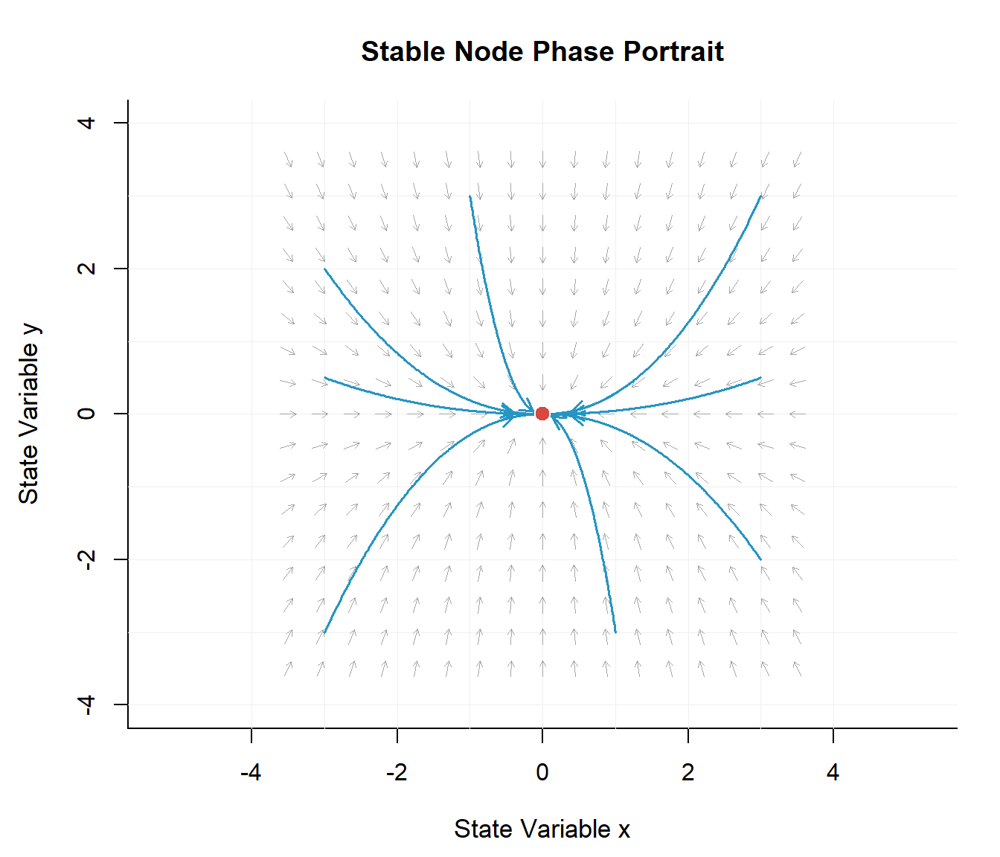
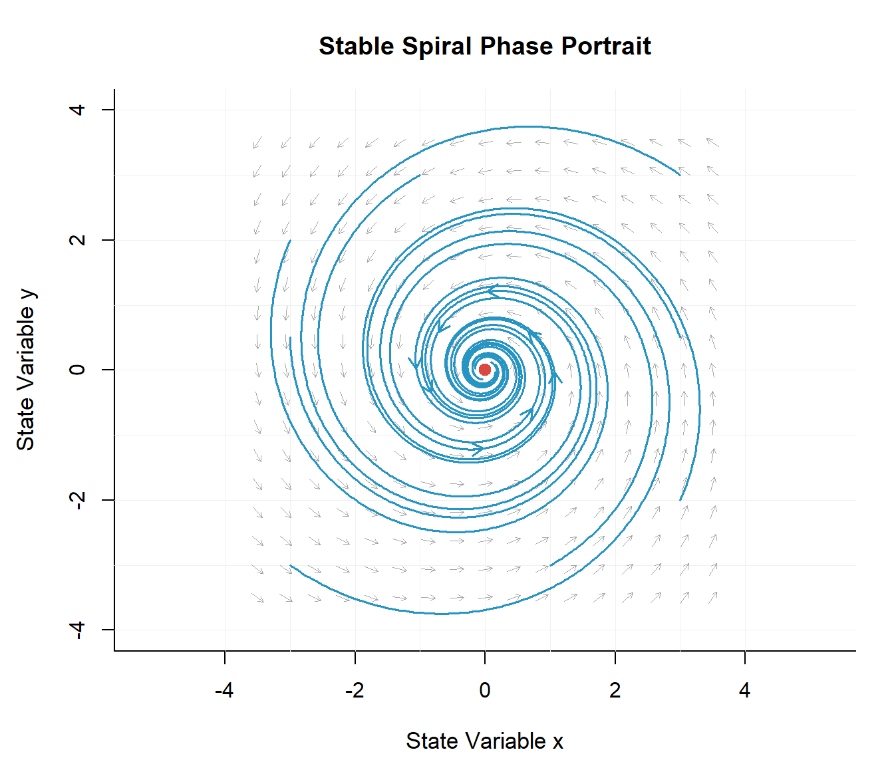
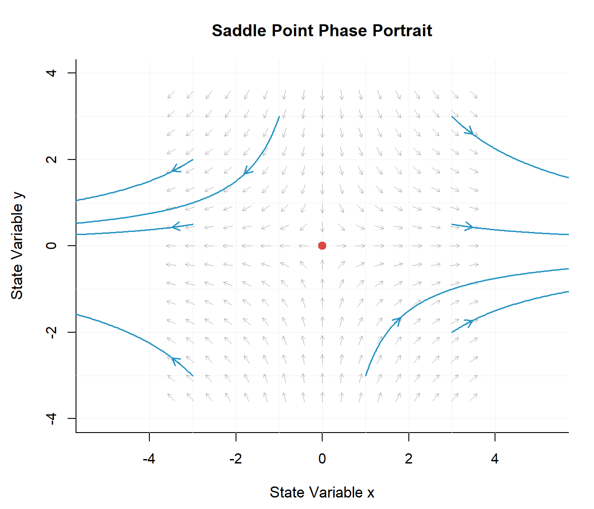
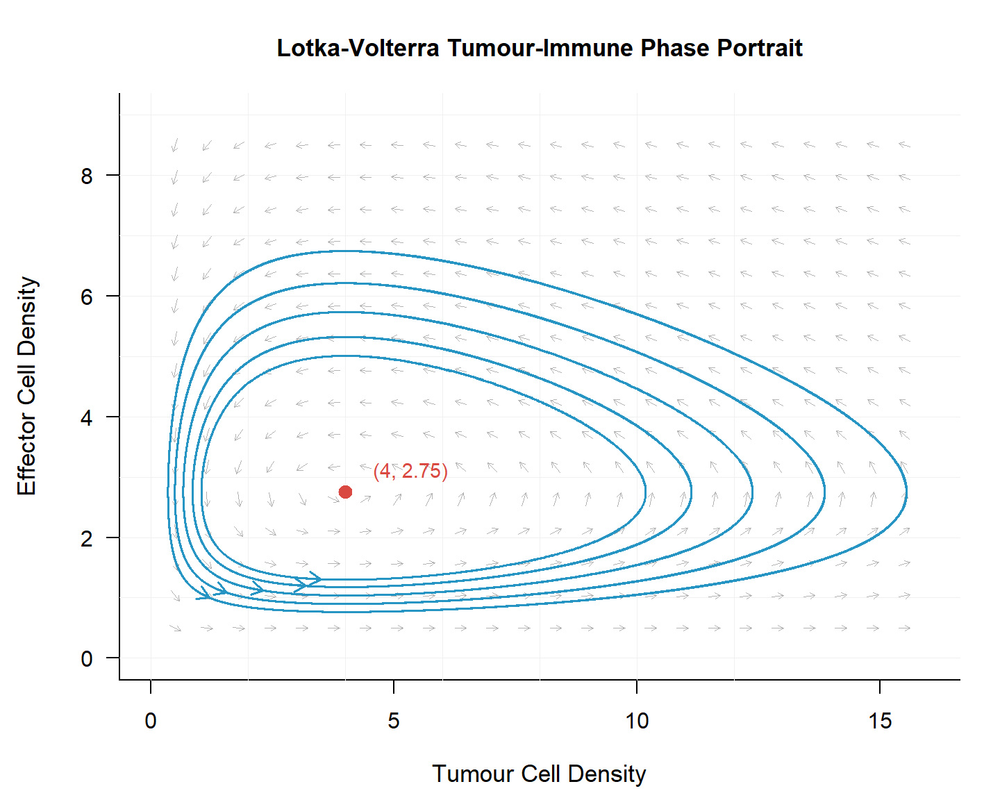

Chapter 2 Introduction
2.1 Recommended Background
Note: While the background topics and prerequisites listed below are helpful for developing a deeper understanding of the material presented in this book, they are not strictly necessary to read and engage with the core material.
Recommended pre-requisites include introductory calculus, ordinary differential equations, linear algebra, probability and statistics (including statistical modelling), and introductory biology. For review, we suggest the open-access resources below. Specific chapters and topics to be familiar with are noted.
2.1.1 Mathematical & Statistical Modelling
- Calculus & Differential Equations:
- Ordinary Differential Equations (ODEs) and systems of ODEs serve as a primary mathematical framework for describing dynamic biological processes, such as tumor cell growth, cell-cell interactions, and decay rates over time.
- Recommended Resources:
- Active Calculus:
- Active Prelude to Calculus
- Active Calculus
- Active Calculus Multivariable: Chapter 11.9 Change of Variables (for understanding the Jacobian Matrix)
- OpenStax Calculus (Alternative):
- Calculus Volume 1
- Calculus Volume 2
- Calculus Volume 3: Chapter 5.7 Change of Variables in Multiple Integrals (for understanding the Jacobian Matrix)
- Active Calculus:
- Linear Algebra:
- Systems of linear equations, vectors, matrix operations, determinants, and eigenvalues/eigenvectors, which are fundamental for linearizing nonlinear systems and performing local stability analysis.
- Recommended Resource: Understanding Linear Algebra
- Chapter 1: Systems of equations
- Chapter 2: Vectors, matrices, and linear combinations
- 2.1 Vectors and linear combinations
- 2.2 Matrix multiplication and linear combinations
- Chapter 3: Invertibility, bases, and coordinate systems
- 3.4 Determinants
- Chapter 4: Eigenvalues and eigenvectors
- Basic understanding of complex numbers
- Probability, Statistics & Statistical Modelling:
- Probability distributions, hypothesis testing, parameter estimation, and statistical modelling techniques such as regression analysis (e.g., linear and logistic regression). These statistical tools enable researchers to fit models to empirical data, quantify parameter uncertainties, and evaluate model performance.
- Recommended Resource: OpenIntro Statistics
2.1.2 Introductory Biology
- Cellular & Cancer Biology:
- Basic cell structures, the cell cycle (mitosis, cell division, and programmed cell death/apoptosis), and fundamental mechanisms of carcinogenesis (the transformation of normal cells into cancer cells).
- Tumour Microenvironment & Immune Interactions:
- Basic concepts of tumour growth dynamics, angiogenesis, and host immune interactions (such as immune effector cells recognizing and killing tumour cells).
- Genetics & Molecular Biology:
- Basic understanding of DNA replication, gene mutations, gene expression, and clonal evolution during cancer progression.
2.2 History of Mathematical Oncology
Cancer is a group of diseases in which abnormal cells divide uncontrollably and can invade nearby tissues. Oncology is the branch of medicine concerned with the diagnosis and treatment of cancer.
Mathematical models can be used to study how cancer develops, grows, and spreads. By providing quantitative and predictive frameworks, mathematical models allow hypotheses about cancer to be tested and evaluated.
A carcinogen is any substance that causes cancer. Carcinogenesis is the process by which normal cells are transformed into cancer cells.
A key observation that motivated many mathematical models of carcinogenesis is cancer incidence. Cancer incidence often increases rapidly with age, while the occurrence of cancer in an individual appears highly stochastic. However, patterns emerge when cancer incidence is examined across populations. These observations contributed to the development of multistage theories of carcinogenesis, which describe cancer development as a sequence of stages or changes in cells.
Beginning in the 1920s, experiments involving chemical carcinogens provided evidence for the idea that cancer develops through multiple stages. In particular, applying two different carcinogens in sequence often produced higher cancer rates than applying a single carcinogen over time, leading to the two-stage model of carcinogenesis.
Charles and Luce-Clausen developed one of the first quantitative multistage theories in the 1940s, using a mathematical model to describe the development of skin tumors in mice. Their work demonstrated how mathematical models could be used to connect assumptions about cellular changes with observed cancer incidence.
Armitage and Doll further developed multistage theory in the 1950s, introducing more general mathematical models that allowed different rates for different stages and treated the stages as sequential cellular changes rather than necessarily genetic mutations. Their work helped establish mathematical modelling as a framework for studying the development of cancer.
2.3 What is a Mathematical Model?
A mathematical model is a numerical representation of a real-world problem. By replacing physical experimentation with mathematical simulations, it allows researchers to evaluate system dynamics and predict future outcomes.
2.4 Systems of ODEs as Mathematical Models
A system of ordinary differential equations (ODEs) is a set of equations that involves two or more dependent variables that depend on one independent variable. A solution to this system is a set of functions that satisfies each equation on some interval \(I\). A system of ODEs can serve as a mathematical model by describing real world systems where multiple interacting components evolve over a shared independent variable. For example, in ecology, the Lotka-Volterra predator-prey model uses a system of two coupled ODEs to track the interdependent population sizes of two interacting species over time \(t\).
Many mathematical models are described using systems of ordinary differential equations (ODEs). It is useful to identify equilibrium points of a system of ODEs and study the stability of the equilibria.
Consider the following system of ODEs:
\[\frac{dx}{dt} = f(x,y)\] \[\frac{dy}{dt} = g(x,y)\]
2.5 Review of Mathematical Concepts
2.5.1 The Characteristic Equation
For a square matrix \(A \in \mathbb{R}^{n \times n}\), the characteristic equation is given by \(\det(A - \lambda I) = 0\). This yields an \(n\)-degree polynomial whose roots correspond directly to the matrix’s eigenvalues \(\lambda\).
2.5.2 The Jacobian Matrix
For a vector-valued function \(f: \mathbb{R}^n \to \mathbb{R}^m\) given by \(f(x) = (f_1(x), \dots, f_m(x))\) where \(x = (x_1, \dots, x_n)\), the Jacobian matrix \(J\) is the \(m \times n\) matrix of first-order partial derivatives:
\[J = \begin{pmatrix} \dfrac{\partial f_1}{\partial x_1} & \cdots & \dfrac{\partial f_1}{\partial x_n} \\ \vdots & \ddots & \vdots \\ \dfrac{\partial f_m}{\partial x_1} & \cdots & \dfrac{\partial f_m}{\partial x_n} \end{pmatrix}\]
When \(m=n\), i.e., the matrix is square, its determinant, commonly referred to as the Jacobian, acts as a local scaling factor.
The Jacobian plays an essential role in coordinate transformations by describing how areas or volumes stretch, rotate, and distort under a change of variables.
Consider the system of ODEs above. The Jacobian matrix of the system is \[J(x,y)= \begin{pmatrix} \dfrac{\partial f}{\partial x} & \dfrac{\partial f}{\partial y}\\ \dfrac{\partial g}{\partial x} & \dfrac{\partial g}{\partial y} \end{pmatrix}\]
This matrix contains the first order partial derivatives of \(f\) and \(g\), describing how small changes in \(x\) and \(y\) affect the rate of change of the system.
2.5.3 Equilibrium Points and Local Stability
An equilibrium point is a point \((x^*, y^*)\) such that \(\frac{dx}{dt} = 0\) and \(\frac{dy}{dt} = 0\). That is, an equilibrium point is a point at which both variables \(x\) and \(y\) remain constant over time.
At an equilibrium, there is no net change in either variable. It is important to note that the equilibrium of a system does not mean that individual processes affecting \(x\) and \(y\) have stopped. Rather, the processes are balancing each other.
Finding an equilibrium tells us where a system can remain unchanged, but does not tell us what happens if the system is slightly disturbed. Stability describes how a system behaves following a small deviation from an equilibrium.
An equilibrium is stable if solutions that start sufficiently close to the equilibrium remain close to it. An equilibrium is asymptotically stable, if it is stable and solutions that start sufficiently close will eventually approach the equilibrium. An equilibrium is unstable if it is not stable.
To study the local stability of an equilibrium \((x^*, y^*)\), we analyse the eigenvalues of \(J(x^*, y^*)\).
Let \(\lambda_1\) and \(\lambda_2\) be eigenvalues of \(J(x^*, y^*)\), and \((x^*, y^*)\) an equilibrium point.
If \(\lambda_1\) and \(\lambda_2\) are both real and negative, then \((x^*, y^*)\) is asymptotically stable.
If \(\lambda_1\) and \(\lambda_2\) are both real and positive, then \((x^*, y^*)\) is unstable.
If \(\lambda _ 1 < 0\) and \(\lambda_2 > 0\), with both being real, then \((x^*, y^*)\) is called a saddle point and is unstable.
If \(\lambda_1\) and \(\lambda_2\) are both complex with negative real parts, then \((x^*, y^*)\) is asymptotically stable.
If \(\lambda_1\) and \(\lambda_2\) are both complex with positive real parts, then \((x^*, y^*)\) is unstable.
If \(\lambda_1\) and \(\lambda_2\) are both purely imaginary, then the linearized system exhibits oscillatory behaviour. Further analysis is required to determine stability.
Zero eigenvalues require further analysis to determine stability.

Figure 2.1: Phase portrait of an asymptotically stable node.

Figure 2.2: Phase portrait of an asymptotically stable spiral.

Figure 2.3: Phase portrait of an unstable saddle point.
2.5.4 Visualizing equilibrium stability
Phase portraits provide a visual representation of the behaviour of solutions to a system of differential equations. Each trajectory represents the evolution of the system from a particular initial condition. Figures 2.1, 2.2, and 2.3 illustrate three different types of equilibria, with the red point representing the equilibrium at the origin.
In Figure 2.1, trajectories approach the equilibrium without oscillating, illustrating an asymptotically stable node. In Figure 2.2, trajectories spiral inward toward the equilibrium, illustrating an asymptotically stable spiral. In contrast, Figure 2.3 shows a saddle point, where some trajectories approach the equilibrium along one direction while others move away from it. These examples demonstrate how the eigenvalues of the Jacobian matrix can be used to understand the local behaviour of a dynamical system near an equilibrium.
2.6 Illustrative Example
Consider the following model, describing a simple tumour-immune interaction based on the Lotka-Volterra predator-prey equations.
Define the following:
\(T\): density of tumour cells,
\(E\): density of immune system effector cells,
\(\rho\): growth rate of tumour cells,
\(\eta\): rate at which effector cells kill tumour cells,
\(\alpha\): immune activation parameter for effector cells,
\(\delta\): decay rate of effector cells,
where \(\rho\), \(\eta\), \(\alpha\), \(\delta\) \(>0\)
To determine the rate of change of tumour cell density, we consider processes that increase and decrease the tumour cell population. We assume that tumour cells grow at a rate proportional to their density. Thus, tumour growth can be described by \(\rho T\). Tumour cells are also removed through interactions with immune effector cells. We assume that the rate of immune mediated killing is proportional to tumour cell and effector cell density. Thus, tumour removal is described by \(\eta T E\). Combining tumour growth and immune mediated killing processes, we obtain:
\[\begin{equation} \frac{dT}{dt} = \underbrace{\rho T }_\text{tumour growth} - \underbrace{\eta T E}_\text{immune mediated killing} \tag{2.1} \end{equation}\]
Similarly, to determine the rate of change of immune effector cell density, we consider processes that increase and decrease the effector cell population. We assume that effector cells decay proportional to their density. Thus, effector cell decay can be described by \(\delta E\). The presence of tumour cells activates an immune response, producing more effector cells. We assume that the rate of effector cell production is proportional to tumour cell density and effector cell density. Therefore, effector cell production is described by \(\alpha E T\). Combining effector cell production and decay processes, we obtain:
\[\begin{equation} \frac{dE}{dt} = \underbrace{\alpha E T}_\text{immune activation} - \underbrace{\delta E}_\text{effector cell decay} \tag{2.2} \end{equation}\]
Together, equations (2.1) and (2.2) form a system of ordinary differential equations that describes the interaction between tumour cells and immune effector cells. We will use this system to review equilibrium points, Jacobian matrices, and stability analysis.
2.7 Analysing this system
Recall that an equilibrium is a state where both \(\frac{dT}{dt}=0\) and \(\frac{dE}{dt}=0\).
We first consider the case where \(T=0\), \(E=0\). This is the case where there is no tumour, and no tumour specific immune response by effector cells. By (2.1) and (2.2), it is clear that \[(T_1,E_1)= (0,0)\] is an equilibrium.
Now consider the case where \(T \neq 0\) and \(E \neq 0\). This describes the case where there is a coexistence with tumour and effector cells. By factoring and setting equation (2.1) equal to \(0\), we get:
\[T(\rho - \eta E) =0\]
Since \(T\neq 0\), we get that \(E= \frac{\rho}{\eta}\).
Similarly, by factoring and setting equation (2.2) equal to \(0\), we get:
\[E(\alpha T - \delta) = 0\]
Since \(E\neq 0\), we get that \(T=\frac{\delta}{\alpha}\).
Thus, \[(T_2,E_2)=(\frac{\delta}{\alpha},\frac{\rho}{\eta})\] is an equilibrium.
To analyse the stability around these equilibria, we need to first find the Jacobian matrix. Defining \(f(T,E) = \rho T - \eta T E\) and \(g(T,E) = \alpha E T - \delta E\), we get that \[J(T,E) = \begin{pmatrix} \rho - \eta E & - \eta T \\ \alpha E & \alpha T - \delta \end{pmatrix}\]
We first analyse the stability around the equilibrium \((T_1,E_1)= (0,0)\). Plugging this equilibrium into the Jacobian matrix, we get \[J(T_1,E_1) = \begin{pmatrix} \rho & 0 \\ 0 & - \delta \end{pmatrix}\]
This matrix has eigenvalues \(\rho\) and \(-\delta\).
The positive eigenvalue \(\rho\) indicates that small deviations from the equilibrium grow over time in one direction, causing the system to move away from equilibrium. The negative eigenvalue \(-\delta\) indicates that small deviations from the equilibrium decay over time in another direction, causing the system to move towards the equilibrium. Since the eigenvalues have opposite signs, the equilibrium is a saddle point and is unstable.
Now, we analyse the stability around the equilibrium \((T_2,E_2)=(\frac{\delta}{\alpha},\frac{\rho}{\eta})\). Plugging this equilibrium into the Jacobian matrix, we get \[J(T_2,E_2) = \begin{pmatrix} 0 & \frac{-\delta \eta}{\alpha} \\ \frac{\alpha \rho}{\eta}& 0 \end{pmatrix}\]
This matrix has eigenvalues \(\pm i \sqrt{\rho \delta}\). This indicates oscillatory behaviour around the equilibrium.
This oscillatory behaviour could indicate the following:
\[ \text{More tumour cells} \longrightarrow \text{More immune response} \longrightarrow \text{Fewer tumour cells} \longrightarrow \text{Less immune response} \longrightarrow \text{More tumour cells} \longrightarrow \cdots \]
2.7.1 Phase portrait of the Lotka–Volterra tumour–immune model
Figure 2.4 illustrates the behaviour of the Lotka–Volterra tumour–immune model using the parameter values \(\rho=1.1\), \(\eta=0.4\), \(\alpha=0.1\), and \(\delta=0.4\). Recall that the model has two equilibria: the tumour-free equilibrium \((0,0)\) and the coexistence equilibrium \((\frac{\delta}{\alpha},\frac{\rho}{\eta})=(4,2.75)\). The blue curves represent solutions corresponding to different initial tumour and effector cell densities, while the red point represents the coexistence equilibrium.
Notice that the trajectories form closed curves around the coexistence equilibrium, illustrating oscillatory behaviour in both populations. As the tumour population increases, the presence of more tumour cells stimulates the accumulation of effector cells. As the effector population increases, more tumour cells are eliminated, causing the tumour population to decrease. Consequently, the effector population also begins to decrease, allowing tumour cells to increase again. This cycle repeats over time. Unlike an asymptotically stable equilibrium, solutions do not approach the coexistence equilibrium. Instead, they continue to oscillate around it, illustrating the neutral stability of the coexistence equilibrium in this particular model.

Figure 2.4: Phase portrait of the Lotka–Volterra tumour–immune model, illustrating oscillatory behaviour around the coexistence equilibrium.
2.8 Limitations
Though this model is simplistic, there are issues in our assumptions, leading to concern about how useful this model is in modelling tumour cell and effector cell interactions. Firstly, the activation term \(\alpha\) is simplistic and does not capture the complexities of immune responses to tumour growth. We also assumed proportional growth and decay, which is not realistic.
Secondly, consider the case where there are no tumour cells (\(T=0\)). By (2.2), \(\frac{dE}{dt}=-\delta E\). We get that \(E(t)= E(0)e^{-\delta t}\), implying that density of effector cells tends to zero over time. This is unrealistic, as effector cells are constantly present throughout the body.
Thirdly, we are not modelling many factors that are involved in these tumour-effector cell interactions. This includes different tumour cell types, different effector cell types, and damage to healthy cells.
Overall, this model simply demonstrates how a system of ordinary differential equations could be used to study tumour cell and effector cell interactions despite its limitations. We will gradually introduce more sophisticated models throughout the text, leading to more realistic models and useful interpretations.